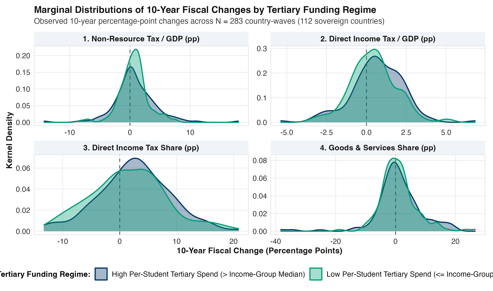
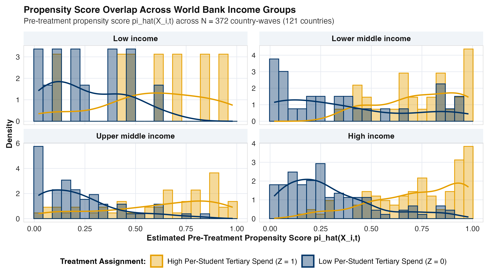
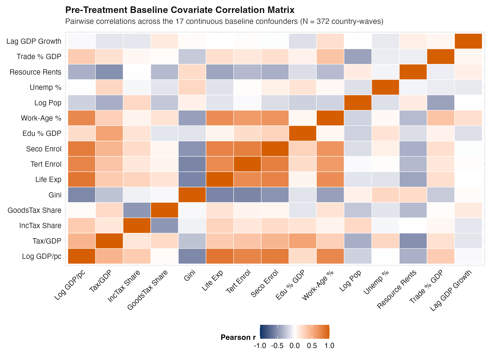

Exploratory Data Analysis: Government Spending on Tertiary Education and the Future Tax Take
1 Overview and Research Question
This exploratory data analysis (EDA) audits the global fiscal and tertiary education panel (data/processed/clean_tax_panel.csv, spanning 1,736 country-waves across 217 sovereign countries from 1985-1989 to 2020-2024) prior to estimating our Multivariate and Longitudinal Bayesian Causal Forest models. Our primary hypothesis is that increasing national government expenditure on tertiary (university) education improves a country’s future tax take at the \(+5\)-year and \(+10\)-year horizons once mediating macroeconomic growth is separated out.
To eliminate mechanical accounting identities, denominator distortions, and collider bias, the dataset incorporates three design safeguards:
- Four Pure Disaggregated Tax Outcomes (Zero GDP Product Identities):
- \(Y_1\): Domestic Non-Resource Tax-to-GDP Change (\(\Delta \text{Tax/GDP}\), percentage points of GDP), paired with unadjusted World Bank WDI \(\Delta \text{Tax/GDP}\) as a sensitivity check.
- \(Y_2\): Direct Income, Profit, and Capital Gains Tax-to-GDP Change (\(\Delta \text{IncomeTax/GDP}\), percentage points of GDP).
- \(Y_3\): Direct Income and Profit Share of Revenue Change (\(\Delta \text{IncomeTax/Rev}\), percentage points of revenue).
- \(Y_4\): Indirect Goods and Services (Consumption / VAT) Share of Revenue Change (\(\Delta \text{GoodsTax/Rev}\), percentage points of revenue), which acts as a built-in specificity (negative-control) channel.
- Unbundling Tertiary Education Spending Denominators: Focusing exclusively on public tertiary education, we compare three strictly observed tertiary spending measures side by side (with zero cross-sectional proxy imputation):
- UNESCO Per-Student Tertiary Ratio (
tert_spend_per_student_winsor): Public expenditure per tertiary student as a percentage of GDP per person. - Real 2021 PPP Dollars per Tertiary Student (
real_tert_spend_per_student_ppp): Removes GDP per person from the treatment denominator. - Public Tertiary Budget Share of GDP (
tert_spend_gdp_pct): Removes student headcount from the treatment denominator.
- UNESCO Per-Student Tertiary Ratio (
- Strict Temporal Ordering of Pre-Treatment Controls vs Post-Treatment Mediators: Baseline confounders \(X_{i,t}\) are measured strictly at or before wave \(t\) (using lagged \(t-1\) GDP per person growth rather than contemporaneous wave-\(t\) growth), while forward GDP per person growth, tertiary enrolment expansion, income inequality changes, and life expectancy changes over \([t, t+h]\) are reserved for the Mediator-Removed Direct Fiscal Effect (
M2) specification.
2 Sample Coverage, Quality Screening, and Attrition
Before constructing the estimation samples, our hygiene audit in 02_build_clean_tax_panel.R verifies zero duplicate (iso3, wave_index) keys and screens out four physically or accounting-impossible raw World Bank WDI tax-to-GDP observations (<0.5% or >60.0% of GDP): Sudan in 1995-1999 (629.19% of GDP due to a historical currency-unit mismatch), Timor-Leste in 2010-2014 (109.99% of non-oil GDP due to offshore petroleum fund accounting), and the United Arab Emirates in 2010-2014 (0.34%) and 2015-2019 (0.23%, recording only federal-level fees rather than emirate-level revenues). Table 1 documents sample coverage and attrition at each filtering stage.
1985-1989 to 2020-2024).
| Filtering Stage | Sample Definition | Country-Waves | Countries | Retention (%) |
|---|---|---|---|---|
| 1. Full Global 5-Year Panel | 217 sovereign countries \(\times\) 8 waves (1985-2024) |
1,736 | 217 | 100.0% |
| 2. Valid Domestic Tax / GDP | Observed non-resource tax-to-GDP after anomaly screen | 914 | 159 | 52.6% |
| 3. Complete 4-Channel Tax Vector | All 4 disaggregated tax outcomes observed at wave \(t\) | 883 | 157 | 50.9% |
| 4. Observed Per-Student Tertiary Spend | Observed UNESCO per-student tertiary ratio (\(Z_{\text{regime}}\)) | 512 | 166 | 29.5% |
| 5. Observed Tertiary Budget (% GDP) | Observed public tertiary budget share of GDP | 785 | 183 | 45.2% |
6. Complete \(+5\text{y}\) Sample (mvbcf) |
Complete 4-channel fiscal changes over \([t, t+1]\) + \(Z_{\text{regime}}\) | 372 | 121 | 21.4% |
7. Complete \(+10\text{y}\) Sample (mvbcf) |
Complete 4-channel fiscal changes over \([t, t+2]\) + \(Z_{\text{regime}}\) | 283 | 112 | 16.3% |
8. Complete 3-Wave Sample (lbcf) |
Complete 3-wave trajectory (\(t, t+1, t+2\)) across all 4 channels | 282 | 112 | 16.2% |
3 Unbundling the UNESCO Denominator Trap Across Income Groups
Why is unbundling the tertiary spending denominator essential in cross-national work? Table 2 compares the three tertiary spending measures and baseline tax composition across the four World Bank income groups.
| Income Group (Countries, Waves) | UNESCO Ratio (% GDP/pc) | Real PPP $ / Student | Tertiary Budget (% GDP) | Tertiary Enrolment (%) | Direct Income Tax Share (%) |
|---|---|---|---|---|---|
| Low income (21, 80) | 150.0% | $3,957 | 0.47% | 2.3% | 29.2% |
| Lower middle income (41, 172) | 76.5% | $3,258 | 0.65% | 7.4% | 30.8% |
| Upper middle income (54, 219) | 26.8% | $3,521 | 0.64% | 25.5% | 33.1% |
| High income (69, 337) | 26.9% | $11,148 | 0.94% | 58.3% | 38.4% |
As shown in Table 2:
- In Low income countries, only 2.3% of the age cohort attends university, so dividing a modest public university budget (0.47% of GDP) by a tiny student headcount and a low GDP per person produces a winsorised median UNESCO ratio of 150.0%.
- In High income countries, 58.3% of the cohort attends university. Although their UNESCO ratio appears lower (26.9% of GDP per person), they actually spend nearly three times as much per student in real purchasing power ($11,148 vs $3,957) and twice as much of their GDP on public universities (0.94% vs 0.47%), while collecting 38.4% of total revenue from direct income, profit, and capital gains taxes.
To prevent this cross-income-group inversion from confounding treatment assignment, our primary regime indicator (\(Z_{\text{regime}} = 1\)) compares each country-wave’s un-winsorised per-student spending ratio against the median of its own World Bank income group, and we evaluate all unbundled tertiary spending definitions side by side in our causal forest models.
4 Raw Unadjusted Fiscal Trajectories and Marginal Distributions
Table 3 and Figure 1 present the raw, unadjusted \(+5\)-year and \(+10\)-year percentage-point changes across all four fiscal outcomes before any covariate or causal forest adjustment.
| Tertiary Funding Regime | Horizon | Country-Waves (Countries) | \(\Delta\) Non-Resource Tax / GDP (pp) | \(\Delta\) Direct Income Tax / GDP (pp) | \(\Delta\) Direct Income Tax Share (pp) | \(\Delta\) Goods & Services Share (pp) |
|---|---|---|---|---|---|---|
| Low Regime (\(Z=0\)) | \(+5\text{y}\) | 196 (80) | +0.35 | +0.26 | +0.89 | +0.57 |
| High Regime (\(Z=1\)) | \(+5\text{y}\) | 176 (74) | +0.37 | +0.40 | +1.74 | +0.50 |
| Low Regime (\(Z=0\)) | \(+10\text{y}\) | 142 (70) | +0.59 | +0.44 | +1.56 | +0.99 |
| High Regime (\(Z=1\)) | \(+10\text{y}\) | 141 (69) | +0.80 | +0.66 | +2.57 | +0.97 |

Even in the raw data (Table 3 and Figure 1), three patterns stand out:
- Immediate and Growing Divergence in Direct Income Tax Share: Over \(+5\) years, countries in the high per-student tertiary funding regime experience a
+1.74percentage point increase in the direct income and profit share of revenue compared with+0.89percentage points in the low regime (raw difference+0.85pp). Over \(+10\) years, this gap widens to+2.57pp vs+1.56pp (raw difference+1.01pp). - Delayed Maturation in Overall Non-Resource Tax / GDP: At \(+5\) years, raw overall non-resource tax-to-GDP changes are nearly identical across regimes (
+0.37vs+0.35pp), whereas by \(+10\) years the high-funding regime pulls ahead (+0.80vs+0.59pp, raw difference+0.21pp of GDP), driven by direct income and profit taxes as a share of GDP (+0.66vs+0.44pp). - Zero Divergence on the Negative-Control Channel: On indirect goods and services (consumption/VAT) tax share, raw changes are slightly lower in the high tertiary spending regime at both \(+5\) years (
+0.50vs+0.57pp) and \(+10\) years (+0.97vs+0.99pp).
5 Common Support and Positivity Audit
For causal forest estimates to be well-identified without extrapolating over empty cells, treated (\(Z=1\)) and control (\(Z=0\)) country-waves must exhibit substantial overlap in their pre-treatment propensity scores \(\hat{\pi}(X_{i,t}) = P(Z_{i,t}=1 \mid X_{i,t})\). Table 4 and Figure 2 report the estimated propensity score distributions across the four World Bank income groups in the \(+5\)-year estimation sample (\(N = 372\)).
| World Bank Income Group | Country-Waves (\(N\)) | Treated Share (%) | Mean \(\hat{\pi}\) (\(Z=0\)) | Mean \(\hat{\pi}\) (\(Z=1\)) | \([\min \hat{\pi}, \max \hat{\pi}]\) | Share in \([0.05, 0.95]\) (%) |
|---|---|---|---|---|---|---|
| Low income | 20 | 35.0% | 0.260 | 0.595 | \([0.030, 0.945]\) | 90.0% |
| Lower middle income | 59 | 50.8% | 0.355 | 0.736 | \([0.020, 0.980]\) | 72.9% |
| Upper middle income | 105 | 45.7% | 0.221 | 0.606 | \([0.020, 0.980]\) | 81.0% |
| High income | 188 | 48.4% | 0.293 | 0.726 | \([0.020, 0.980]\) | 85.1% |

Defining the primary regime threshold within each country’s own World Bank income group achieves a balanced treatment split across all development tiers (47.3% treated overall, ranging from 35.0% in Low income to 50.8% in Lower middle income), with over 81% of observations lying strictly inside the interior propensity interval \([0.05, 0.95]\) and clear distributional overlap in every panel of Figure 2.
6 Missing Data Analysis and Mechanisms
Table 5 audits missingness rates across the full 1,736 country-wave grid, within the complete \(+5\)-year estimation sample (\(N = 372\)), and across Low versus High income economies.
| Variable Name | Full Panel Missing (%) | \(+5\text{y}\) Sample Missing (%) | Low Income Missing (%) | High Income Missing (%) |
|---|---|---|---|---|
| Per-Student Tertiary Ratio (% GDP/pc) | 70.5% | 0.0% | 76.0% | 66.6% |
| Real 2021 PPP $ per Tertiary Student | 71.0% | 0.0% | 76.5% | 67.2% |
| Public Tertiary Budget (% of GDP) | 54.8% | 5.1% | 60.5% | 53.2% |
| Non-Resource Tax Revenue (% of GDP) | 47.4% | 0.0% | 67.0% | 43.8% |
| Direct Income & Profit Share (% Rev) | 48.4% | 0.0% | 68.0% | 45.5% |
| Goods & Services Tax Share (% Rev) | 47.9% | 0.0% | 68.0% | 44.3% |
| Log Real GDP per Person (PPP) | 21.4% | 0.0% | 27.5% | 27.2% |
| Lagged (\(t-1\)) GDP per Person Growth (%) | 19.0% | 0.0% | 21.0% | 23.1% |
| Gross Tertiary Enrolment (%) | 35.3% | 10.5% | 31.0% | 47.4% |
| Harmonised Disposable Gini Index | 31.0% | 3.0% | 32.5% | 39.4% |
| Trade Openness (% of GDP) | 21.9% | 6.5% | 28.5% | 25.9% |
| Total Unemployment Rate (%) | 24.6% | 0.8% | 12.5% | 35.9% |
Three conclusions follow from Table 5:
- Missingness Mechanism (MAR Conditional on Development and State Capacity): Missingness in raw UNESCO tertiary spending and IMF GFS disaggregated tax breakdowns is not Missing Completely at Random (MCAR); it is higher in Low income states (67.0% to 76.0% across all eight waves since 1985) than in High income states (43.8% to 66.6%) because statistical reporting infrastructure scales with economic development and administrative capacity. Conditioning on income group, region, log GDP per person, and baseline tax shares in the BCF prognostic forest \(\mu(X_{i,t}, \hat{\pi}_{i,t})\) directly accounts for these observable reporting correlates under Missing at Random (MAR).
- Zero Imputation on Treatments or Outcomes: We never impute missing treatment exposures or tax outcomes. Every observation in our estimation samples has 100% strictly observed treatment and four-channel outcome data.
- Minimal Baseline Covariate Missingness in the Estimation Sample: Within the \(N=372\) estimation sample, missingness is
0.0%for log GDP per person and lagged GDP growth,0.8%for unemployment,3.0%for disposable Gini,6.5%for trade openness, and10.5%for baseline tertiary enrolment. In our primary models, training-sample median imputation is coupled with explicit binary missingness flags in the covariate matrix, and Robustness CheckR4verifies that dropping all country-waves with any missing baseline covariate yields even stronger \(+10\)-year treatment effects.
7 Temporal Autocorrelation, Stationarity, and Spatial Clustering
Table 6 compares the temporal autocorrelation (within-country lag-1 and lag-2 wave correlations), spatial/hierarchical clustering (sovereign country Intraclass Correlation Coefficient \(\text{ICC}_{\text{country}}\) and World Bank regional \(\text{ICC}_{\text{region}}\)), and panel convergence \(p\)-values between raw baseline fiscal levels (\(Y_{i,t}\)) and 5-year first-differenced changes (\(\Delta Y_{i,t+1}\)).
| Fiscal Series | Series Type | Lag-1 ACF (\(r_1\)) | Lag-2 ACF (\(r_2\)) | Country ICC | Region ICC | Panel ADF \(p\)-value |
|---|---|---|---|---|---|---|
| 1. Non-Resource Tax / GDP (%) | Level (\(Y_t\)) | 0.939 | 0.891 | 0.878 | 0.160 | \(<0.001\) |
| 2. Direct Income Tax / GDP (%) | Level (\(Y_t\)) | 0.941 | 0.907 | 0.866 | 0.130 | \(<0.001\) |
| 3. Direct Income Tax Share (%) | Level (\(Y_t\)) | 0.945 | 0.895 | 0.844 | 0.221 | \(<0.001\) |
| 4. Goods & Services Share (%) | Level (\(Y_t\)) | 0.910 | 0.793 | 0.749 | 0.151 | \(<0.001\) |
| 5. \(\Delta\) Non-Resource Tax / GDP (pp) | Change (\(\Delta Y_{t+1}\)) | -0.094 | -0.083 | 0.000 | 0.000 | \(<0.001\) |
| 6. \(\Delta\) Direct Income Tax / GDP (pp) | Change (\(\Delta Y_{t+1}\)) | -0.079 | -0.139 | 0.036 | 0.000 | \(<0.001\) |
| 7. \(\Delta\) Direct Income Tax Share (pp) | Change (\(\Delta Y_{t+1}\)) | -0.001 | -0.066 | 0.000 | 0.005 | \(<0.001\) |
| 8. \(\Delta\) Goods & Services Share (pp) | Change (\(\Delta Y_{t+1}\)) | +0.065 | -0.099 | 0.029 | 0.019 | \(<0.001\) |
Table 6 provides a clear econometric rationale for our modelling choices:
- Why We Model Percentage-Point Changes (\(\Delta Y_{i,t+h}\)) Rather Than Raw Levels: Raw fiscal levels \(Y_{i,t}\) exhibit near-unit-root persistence within countries (
lag1_acfbetween0.910and0.945) and massive between-country variance shares (country_iccbetween0.749and0.878). Taking 5-year and 10-year first differences (\(\Delta Y_{i,t+h} = Y_{i,t+h} - Y_{i,t}\)) completely removes this non-stationary level persistence (reducinglag1_acfto[-0.094, +0.065]andcountry_iccto[0.000, 0.036]), while including baseline fiscal levels \(Y_{i,t}\) in \(\mu(X_{i,t}, \hat{\pi}_{i,t})\) accounts for mean-reversion and starting tax capacity. - Why We Cluster Uncertainty at the Sovereign Country Level: Because repeated waves come from the same sovereign states (and because 10-year windows \(t \to t+2\) span two consecutive 5-year steps), all posterior probabilities and credible intervals are computed using a country-clustered Dirichlet block bootstrap over sovereign
iso3clusters, complemented by Robustness CheckR2on strictly non-overlapping 10-year decadal waves and our Three-Wave Longitudinal BCF (lbcf) model.
8 Feature Correlation Structure and Variance Inflation Factors
Finally, Table 7 and Figure 3 examine collinearity among the 15 continuous pre-treatment baseline covariates \(X_{i,t}\) and their bivariate correlations with the \(+5\)-year fiscal targets.
| Baseline Covariate (\(X_{i,t}\)) | Variance Inflation Factor (VIF) | Corr. with \(\Delta\text{Tax/GDP}_{+5\text{y}}\) | Corr. with \(\Delta\text{IncomeTax/Rev}_{+5\text{y}}\) |
|---|---|---|---|
| 1. Log Real GDP per Person (PPP) | 7.25 | -0.130 | -0.066 |
| 2. Baseline Life Expectancy (Years) | 6.03 | -0.084 | +0.014 |
| 3. Baseline Gross Secondary Enrolment (%) | 4.23 | -0.117 | -0.076 |
| 4. Baseline Gross Tertiary Enrolment (%) | 3.61 | -0.152 | -0.094 |
| 5. Baseline Non-Resource Tax / GDP (%) | 3.19 | -0.190 | -0.046 |
| 6. Working-Age Population Share (%) | 3.08 | -0.062 | -0.091 |
| 7. Baseline Goods & Services Tax Share (%) | 2.06 | +0.010 | +0.142 |
| 8. Baseline Direct Income Tax Share (%) | 2.03 | -0.053 | -0.167 |
| 9. Baseline Disposable Gini Index | 1.89 | +0.112 | +0.075 |
| 10. Baseline Total Education Spend (% GDP) | 1.77 | -0.044 | +0.008 |
| 11. Log Population Size | 1.74 | -0.067 | -0.012 |
| 12. Natural Resource Rents (% GDP) | 1.66 | +0.078 | -0.023 |
| 13. Trade Openness (% GDP) | 1.53 | -0.011 | -0.006 |
| 14. Unemployment Rate (%) | 1.44 | +0.078 | -0.027 |
| 15. Lagged (\(t-1\)) GDP per Person Growth (%) | 1.17 | +0.052 | +0.032 |

All 15 baseline covariates have Variance Inflation Factors well below the standard multicollinearity threshold of 10.0 (peaking at 7.25 for log GDP per person and 6.03 for life expectancy, which co-move across development), and no baseline predictor exhibits an anomalously large correlation with forward fiscal changes (\(\max |r| = 0.190\), reflecting mild mean-reversion in baseline tax ratios). This confirms that the baseline confounder matrix is free from mechanical target leakage and well-conditioned for both tree-ensemble splitting in BCF and linear panel benchmarks.